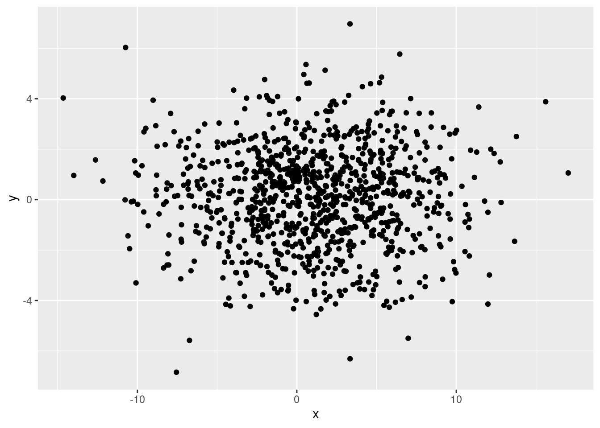

![]()
incCount <- function(inObj, useName){
nObj <- length(inObj)
useNum <- max(inObj) + 1
inObj <- c(inObj, useNum)
names(inObj)[nObj+1] <- useName
inObj
}
figCount <- c("_"=0)
tableCount <- c("_"=0)I have been watching the activity in RStudio and knitr for a while, and have even been using Rmd (R markdown) files in my own work as a way to easily provide commentary on an actual dataset analysis. Yihui has proposed writing papers in markdown and posting them to a blog as a way to host a statistics journal, and lots of people are now using knitr as a way to create reproducible blog posts that include code (including yours truly).
The idea of writing a paper that actually includes the necessary code to perform the analysis, and is actually readable in its raw form, and that someone else could actually run was pretty appealing. Unfortunately, I had not had the time or opportunity to actually try it, until recently our group submitted a conference paper that included a lot of analysis in R that seemed like the perfect opportunity to try this. (I will link to the paper here when I hear more, or get clearance from my PI). Originally we wrote the paper in Microsoft(r) Word, but after submission I decided to see what it would have taken to write it as an Rmd document that could then generate markdown or html.
It turned out that it was not that hard, but it did force me to do some things differently. This is what I want to discuss here.
Advantages
I actually found it much easier to have the text with the analysis (in contrast to having to be separate in a Word document), and upon doing the conversion, discovered some possible numerical errors that crept in because of having to copy numerical results separately (that is the nice thing about being able to insert variable directly into the text). In addition, the Word template for the submission didn’t play nice with automatic table and figure numbering, so our table and figure numbering got messed up in the submission. So overall, I’d say it worked out better with the Rmd file overall, even with the having to create functions to handle table and figure numbering properly myself (see below).
Tables and Figures
As I’m sure most of you know, Word (and other WYSIWYG editors) have ability to keep track of your object numbers, this is especially nice for keeping your figure and table numbers straight. Of course, there is no such ability built into a static text file, but I found it was easy to write a couple of functions for this. The way I came up with is to have a variable that contains a label for the figure or table, a function that increments the counter when new figures or tables are added, and a function that prints the associated number for a particular label. This does require a bit of forethought on the part of the writer, because you may have to add a table or figure label to the variable long before you actually create it, but as long as you use sane (i.e. descriptive) labels, it shouldn’t be a big deal. Let me show you what I mean.
Counting
The incCount function is very simple, it takes an object, checks the maximum count, and then adds an incremental value with the supplied name. In this example, I initialized the figCount and tableCount objects with a non-sensical named value of zero.
Now in the process of writing, I decide I’m going to need a table on the amount of time spent by post-docs writing blog posts in different years of their post-doc training. Lets call this t.blogPostDocs. Notice that this is a fairly descriptive name. We can assign it a number like so:
tableCount <- incCount(tableCount, "t.blogPostDocs")
tableCount _ t.blogPostDocs
0 1 Inserting
So now we have a variable with a named number we can refer to. But how do we insert it into the text? We are going to use another function that will let us insert either the text with a link, or just the text itself.
pasteLabel <- function(preText, inObj, objName, insLink=TRUE){
objNum <- inObj[objName]
useText <- paste(preText, objNum, sep=" ")
if (insLink){
useText <- paste("[", useText, "](#", objName, ")", sep="")
}
useText
}This function allows us to insert the table number like so:
r I(pasteLabel("Table", tableCount, "t.blogPostDocs"))This would be inserted into a normal inline code block. The I makes sure that the text will appear as normal text, and not get formatted as a code block. The default behavior is to insert as a relative link, thereby enabling the use of relative links to link where a table / figure is mentioned to its actual location. For example, we can insert the anchor link like so:
<a id="t.blogPostDocs"></a>Markdown Tables
Followed by the actual table text. This brings up the subject of markdown tables. I also wrote a function (thanks to Yihui again) that transforms a normal R data.frame to a markdown table.
tableCat <- function(inFrame){
outText <- paste(names(inFrame), collapse=" | ")
outText <- c(outText, paste(rep("---", ncol(inFrame)), collapse=" | "))
invisible(apply(inFrame, 1, function(inRow){
outText <<- c(outText, paste(inRow, collapse=" | "))
}))
return(outText)
}Lets see it in action.
postDocBlogs <- data.frame(PD=c("p1", "p2", "p3"), NBlog=c(4, 10, 2), Year=c(1, 4, 2))
postDocBlogs PD NBlog Year
1 p1 4 1
2 p2 10 4
3 p3 2 2postDocInsert <- tableCat(postDocBlogs)
postDocInsert[1] "PD | NBlog | Year" "--- | --- | ---" "p1 | 4 | 1"
[4] "p2 | 10 | 4" "p3 | 2 | 2" To actually insert it into the text, use a code chunk with results='asis' and echo=FALSE.
cat(postDocInsert, sep="\n")| PD | NBlog | Year |
|---|---|---|
| p1 | 4 | 1 |
| p2 | 10 | 4 |
| p3 | 2 | 2 |
Before inserting the table though, you might want an inline code with the table number and caption, like this:
I(pasteLabel("Table", tableCount, "t.blogPostDocs", FALSE)) This is the number of blog posts and year of training for post-docs.
Table 1 This is the number of blog posts and year of training for post-docs.
Remember for captions to set the insLink variable to FALSE so that you don’t generate a link from the caption.
Figures
Oftentimes, you will have code that generates the figure, and then you want to insert the figure at a different point. This is accomplished by the judicious use of echo and include chunk options.
For example, we can create a ggplot2 figure and store it in a variable in one chunk, and then print it in a later chunk to actually insert it into the text body.
plotData <- data.frame(x=rnorm(1000, 1, 5), y=rnorm(1000, 0, 2))
plotKeep <- ggplot(plotData, aes(x=x, y=y)) + geom_point()
figCounts <- incCount(figCount, "f.randomFigure")And now we decide to actually insert it using print(plotKeep) with the option of echo=FALSE:

Figure 1. A random figure.
Numerical result formatting
When R prints a number, it normally likes to do so with lots of digits. This is not probably what you want either in a table or when reporting a number in a sentence. You can control that by using the format function. When generating a new variable, the number of digits to display when printing will be saved, and when used on a variable directly, only the defined number of digits will display.
Echo and Include
This brings up the issue of how to keep the code from appearing in the text body. I found depending on the particulars, either using echo=FALSE or include=FALSE would do the job. This is meant to be a paper, a reproducible one, but a paper nonetheless, and therefore the code should not end up in the text body.
References
One thing I haven’t done yet is convert all the references. I am planning to try using the knitcitations package. I will probably post on that experience.
HTML generation
Because I use RStudio, I set up a modified function For generating a full html version of the paper, changing the default RStudio markdown render options like so:
htmlOptions <- markdownHTMLOptions(defaults=TRUE)
htmlOptions <- htmlOptions[htmlOptions != "hard_wrap"]
markdownToHTML(inputFile, outputFile, options = htmlOptions)This should be added to a .Rprofile file either in your home directory or in the directory you start R in (this is especially useful for modification on a per project basis).
I do this because when I write my documents, I want the source to be readable online. If this is a github hosted repo, that means being displayed in the github file browser, which does not do line wrapping. So I set up a 120 character line in my editor, and try very hard to stick to that.
Function source
You can find the previously mentioned functions in a github gist here.
Post source
The source files for this blog post can be found at: Rmd, md, and html.
Posted on October 9, 2012, at http://robertmflight.blogspot.com/2012/10/writing-papers-using-r-markdown.html
Edit: added section on formatting numerical results
Edit: added session info
R version 4.2.1 (2022-06-23)
Platform: x86_64-pc-linux-gnu (64-bit)
Running under: Pop!_OS 22.04 LTS
Matrix products: default
BLAS: /rmflight_stuff/software/R-4.2.1/lib/libRblas.so
LAPACK: /rmflight_stuff/software/R-4.2.1/lib/libRlapack.so
locale:
[1] LC_CTYPE=en_US.UTF-8 LC_NUMERIC=C
[3] LC_TIME=en_US.UTF-8 LC_COLLATE=en_US.UTF-8
[5] LC_MONETARY=en_US.UTF-8 LC_MESSAGES=en_US.UTF-8
[7] LC_PAPER=en_US.UTF-8 LC_NAME=C
[9] LC_ADDRESS=C LC_TELEPHONE=C
[11] LC_MEASUREMENT=en_US.UTF-8 LC_IDENTIFICATION=C
attached base packages:
[1] stats graphics grDevices datasets utils methods base
other attached packages:
[1] ggplot2_3.3.6
loaded via a namespace (and not attached):
[1] compiler_4.2.1 pillar_1.8.1 tools_4.2.1 digest_0.6.29
[5] jsonlite_1.8.0 evaluate_0.16 lifecycle_1.0.2 tibble_3.1.8
[9] gtable_0.3.1 pkgconfig_2.0.3 rlang_1.0.5 DBI_1.1.3
[13] cli_3.4.0 rstudioapi_0.14 yaml_2.3.5 xfun_0.33
[17] fastmap_1.1.0 withr_2.5.0 stringr_1.4.1 dplyr_1.0.10
[21] knitr_1.40 generics_0.1.3 htmlwidgets_1.5.4 vctrs_0.4.1
[25] grid_4.2.1 tidyselect_1.1.2 glue_1.6.2 R6_2.5.1
[29] fansi_1.0.3 rmarkdown_2.16 farver_2.1.1 purrr_0.3.4
[33] magrittr_2.0.3 scales_1.2.1 htmltools_0.5.3 assertthat_0.2.1
[37] colorspace_2.0-3 renv_0.15.5 labeling_0.4.2 utf8_1.2.2
[41] stringi_1.7.8 munsell_0.5.0 Reuse
Citation
BibTeX citation:
@online{mflight2012,
author = {Robert M Flight},
title = {Writing {Papers} {Using} {R} {Markdown}},
date = {2012-10-09},
url = {https://rmflight.github.io/posts/2012-10-09-writing-papers-using-r-markdown},
langid = {en}
}
For attribution, please cite this work as:
Robert M Flight. 2012. “Writing Papers Using R Markdown.”
October 9, 2012. https://rmflight.github.io/posts/2012-10-09-writing-papers-using-r-markdown.